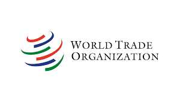
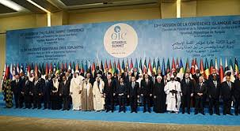
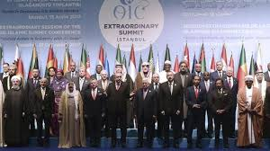
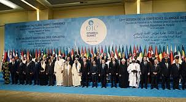
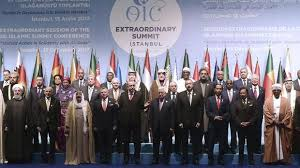

 



Kerja sama multilateral merujuk pada bentuk kerja sama yang melibatkan lebih dari dua negara dan biasanya dilakukan melalui organisasi atau forum internasional yang bertujuan untuk mengatasi isu-isu global atau kawasan yang memerlukan kerjasama kolektif. Dalam kerja sama multilateral, negara-negara anggota bekerja bersama untuk mencapai tujuan bersama, seperti perdamaian, pembangunan ekonomi, perlindungan lingkungan, atau pemecahan masalah global lainnya. Organisasi internasional seperti Perserikatan Bangsa-Bangsa (PBB), Organisasi Perdagangan Dunia (WTO), dan Forum G20 adalah contoh dari mekanisme kerja sama multilateral. Bentuk kerja sama ini sering kali mencakup berbagai sektor, seperti perdagangan, perubahan iklim, keamanan, kesehatan, dan hak asasi manusia, dengan negara-negara yang terlibat bekerja sama untuk mencapai hasil yang lebih besar yang tidak dapat dicapai secara unilateral atau bilateral.
Perserikatan Bangsa-Bangsa (PBB): Indonesia dan Sudan adalah anggota PBB, dan keduanya terlibat aktif dalam berbagai inisiatif dan kegiatan PBB, baik di Dewan Keamanan, Majelis Umum, maupun badan-badan khusus lainnya. PBB adalah forum utama untuk kerja sama multilateral dalam menangani masalah global, seperti perdamaian, kemanusiaan, perubahan iklim, dan pembangunan ekonomi. Penyelesaian Konflik: Indonesia dan Sudan bekerja sama dalam mendorong penyelesaian damai konflik-konflik internasional, termasuk melalui misi pemeliharaan perdamaian yang dipimpin oleh PBB. Kesehatan Global: Indonesia dan Sudan juga bekerja sama dalam forum PBB untuk menangani isu kesehatan global, seperti melalui Organisasi Kesehatan Dunia (WHO), untuk mengatasi masalah kesehatan yang memengaruhi negara-negara berkembang.
Organisasi Konferensi Islam (OKI): Indonesia dan Sudan adalah anggota Organisasi Konferensi Islam (OKI), yang merupakan organisasi multilateral yang terdiri dari negara-negara berpenduduk mayoritas Muslim. OKI bertujuan untuk memperkuat solidaritas antarnegara Muslim dan bekerja sama dalam berbagai bidang seperti perdamaian, keamanan, pengentasan kemiskinan, dan pembangunan ekonomi. Diplomasi Islam: Indonesia dan Sudan aktif dalam forum OKI untuk memajukan kepentingan negara-negara Muslim dalam isu internasional, seperti masalah Palestina dan solidaritas Islam. Krisis Kemanusiaan: Dalam konteks OKI, Indonesia dan Sudan juga berkolaborasi dalam merespons krisis kemanusiaan, baik dalam membantu negara-negara yang terdampak konflik maupun bencana alam.
Forum Asia-Afrika (AAF): Indonesia dan Sudan turut terlibat dalam forum Forum Asia-Afrika (AAF), yang merupakan wadah kerja sama antara negara-negara Asia dan Afrika. Indonesia menjadi tuan rumah Konferensi Asia-Afrika 1955, yang merupakan tonggak penting dalam hubungan Asia-Afrika. Sudan, sebagai negara Afrika, merupakan bagian dari kesepakatan kerja sama ini. Penguatan Kerja Sama Ekonomi: Melalui AAF, Indonesia dan Sudan bersama negara-negara lainnya berupaya meningkatkan kerjasama ekonomi antara dua benua, termasuk dalam bidang perdagangan, investasi, dan pembangunan infrastruktur. Solidaritas Politik dan Sosial: Forum ini juga mendorong solidaritas dalam menghadapi tantangan sosial dan politik global, seperti ketidaksetaraan ekonomi dan dampak perubahan iklim.
Organisasi Perdagangan Dunia (WTO): Indonesia dan Sudan adalah anggota Organisasi Perdagangan Dunia (WTO), yang merupakan forum multilateral yang mengatur aturan perdagangan internasional. Dalam WTO, Indonesia dan Sudan dapat berkolaborasi untuk meningkatkan perdagangan internasional, mengurangi hambatan tarif, dan memajukan kepentingan negara-negara berkembang. Perdagangan dan Pembangunan: Dalam konteks WTO, Indonesia dan Sudan berusaha untuk mendorong lebih banyak akses pasar dan perdagangan bebas untuk negara-negara berkembang, sambil mengatasi tantangan dalam pembangunan ekonomi.